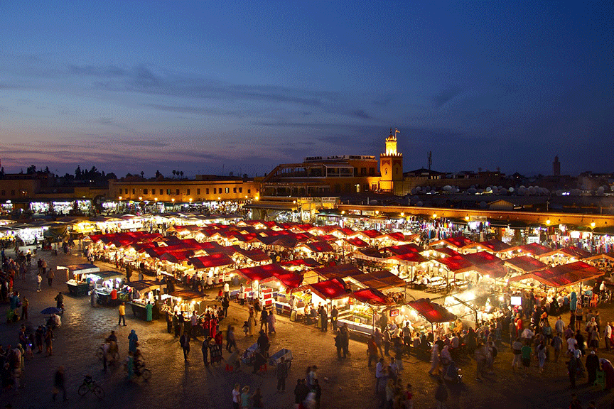
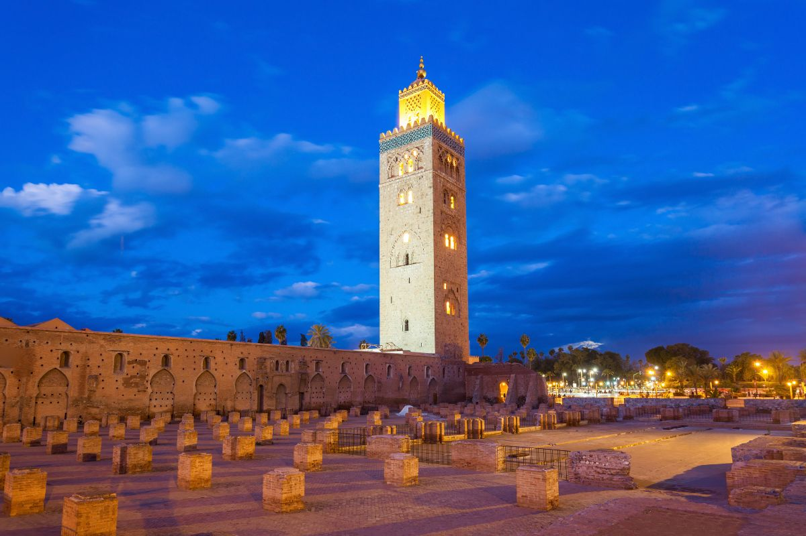
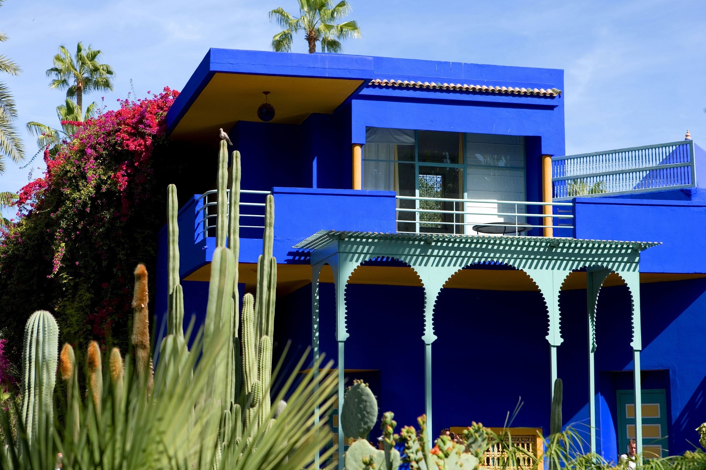
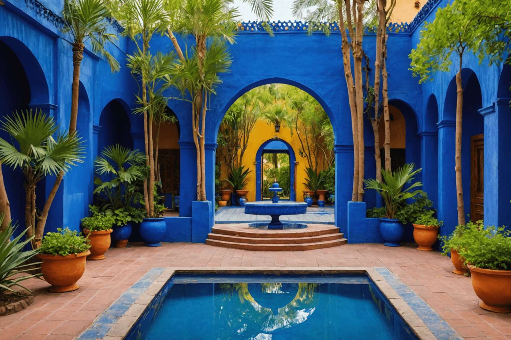
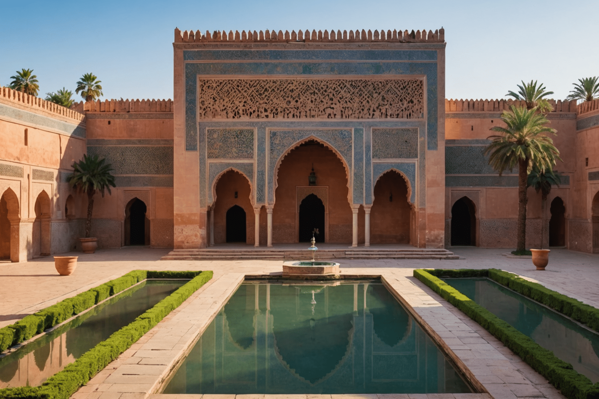
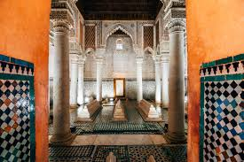
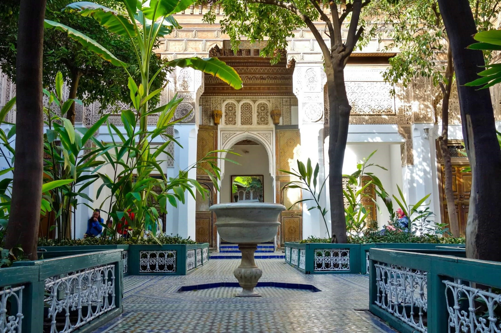
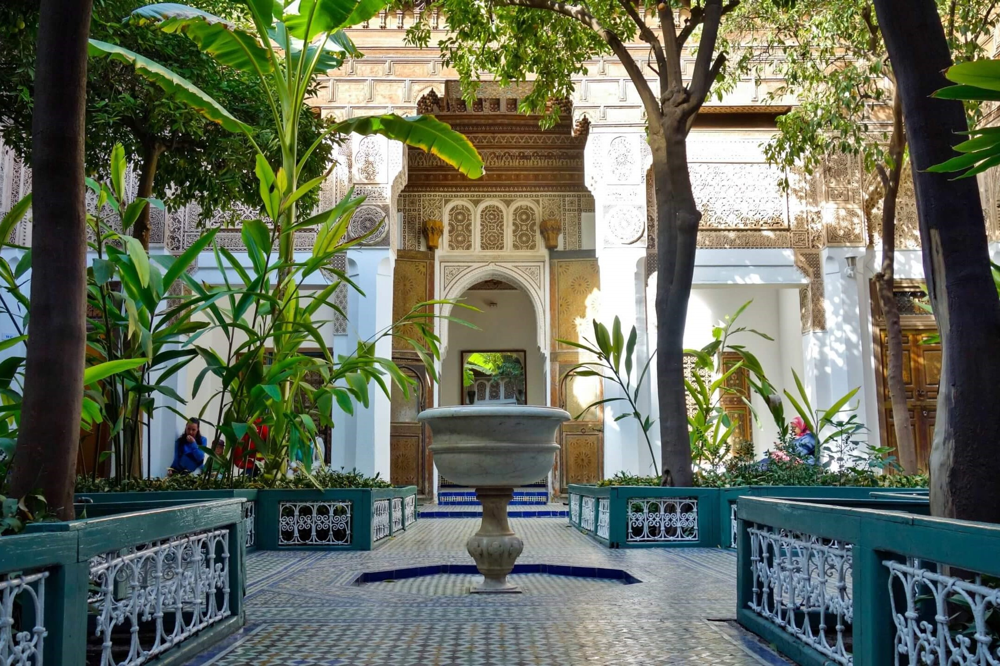

A glipmse into Marrakech's history
Marrakesh, known for its vibrant markets and exquisite architecture. founded in 1070 by the Almoravid dynasty, has a rich and diverse history. Initially a military outpost, it quickly became a major cultural and economic center. The city flourished under the Almohads in the 12th century, when many of its iconic structures, like the Koutoubia Mosque,and the Saadian Tombs were built. During the 16th century, the Saadian dynasty revitalized Marrakesh, making it the capital of Morocco and a hub for trade art, and architecture;The city's vibrant souks and gardens, like the famous Majorelle Garden, emerged during this time. it also played a crucial role in connecting sub-Saharan Africa to Europe. Marrakesh continued to thrive under various dynasties, becoming a melting pot of cultures, from Berber and Arab influences to Spanish and French during the colonial period. Today, it’s famous for its bustling medina, lively souks, historic sites and rich traditions, reflecting a blend of its historical layers. The city was designated a UNESCO World Heritage site in 1985, preserving its unique heritage for future generations.
Top Marrakech's attractions
| Jemaa el-Fnaa | Koutoubia Mosque |
|---|---|
|
A vibrant central square filled with food stalls, performers, and markets, offering a lively atmosphere day and night. |
The largest mosque in Marrakech, featuring a stunning minaret that is an iconic symbol of the city. |


|


|
{kind=link}
{kind=link}
| Majorelle Garden | Saadian Tombs |
|---|---|
|
A beautiful garden filled with exotic plants and vibrant colors, originally designed by French painter Jacques Majorelle. |
An ancient burial site showcasing intricate architectural details and a glimpse into the city’s history. |
|   |   |
{kind=link}
{kind=link}
{kind=link}
{kind=link}
| Palace of Bahia |
|---|
| A stunning 19th-century palace known for its beautiful gardens and intricate mosaics |
 

|
{kind=link}